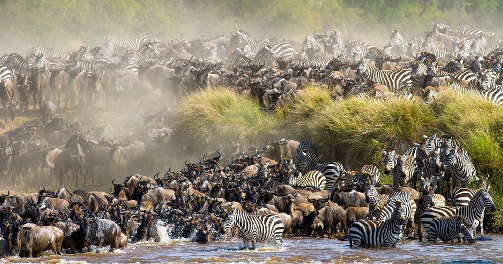
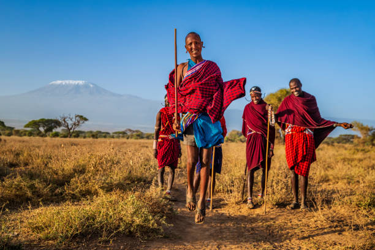
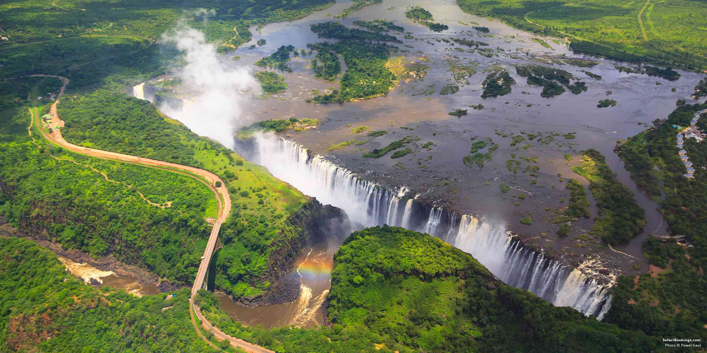
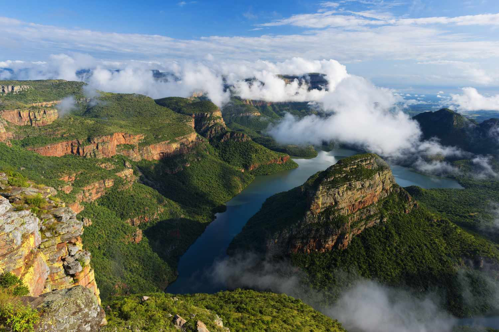

African Essence • Minimalistic design, rich culture, wildlife, warm tones, and bold expression!
Curated Projects 2026

Capturing The Great Migration: movement, survival, and rhythm of the wild

A culture defined by courage, unity, and timeless traditions.

Victoria Falls roars with immense power as vast sheets of water plunge into a deep gorge, sending mist high into the sky and shaping one of Africa’s most awe-inspiring natural wonders.

One of the largest and greenest canyons in the world known for its dramatic cliffs, lush vegetation, and breathtaking views carved by the winding river below..